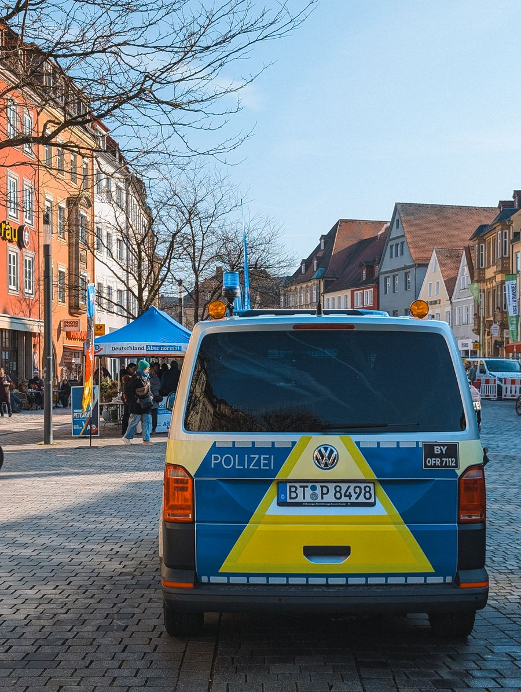

你不知道的德国 · 38
👮 16 个州
就有 16 种警察
Polizeihoheit der Länder · 110 vs 112 · 搜查要法官批
👮 联邦制的一个直接后果
德国没有一支全国统一的警察。治安权属于各州（Polizeihoheit der Länder），所以 16 个州各有一支 Landespolizei，各自定制服、徽章、装备和招录标准。
你在柏林、慕尼黑、斯图加特看到的警察，制服颜色和式样可能都不一样。巴伐利亚长期用绿色制服，后来才逐步换成和其他州接近的蓝色。
👮 各州警察连警衔和警务号的写法都不统一。所以「德国警察」这个词，严格说是个集合名词。
🇩🇪 Auf Deutsch
Es gibt in Deutschland keine einheitliche Polizei: Die Polizeihoheit liegt bei den Ländern. Jedes Bundesland hat seine eigene Landespolizei mit eigener Uniform und eigener Ausbildung.
🧩 其实是三层
第一层是 Landespolizei（州警察，管日常治安、巡逻、交通事故），第二层是 Bundespolizei（联邦警察，管边境、火车站、机场和铁路），第三层是 BKA（联邦刑事警察局，办跨州和重大案件）。
所以同一条街上可能同时出现三套不同体系的执法力量，制服和管辖权都不一样，各管各的事。
🧩 德国统一前，东德有另一套「人民警察」（Volkspolizei）。两德统一后东部警队被重组、人员大幅替换，这段历史至今还在公共讨论里。
🇩🇪 Auf Deutsch
Man unterscheidet drei Ebenen: die Landespolizei, die Bundespolizei (Bahn, Grenzen, Flughäfen) und das BKA, das länderübergreifende schwere Kriminalität bearbeitet.
🚪 不能随便进你家
德国警察要搜查住宅，原则上需要法官签发的搜查令（Durchsuchungsbeschluss）。只有在「延误就有危险」的紧急情况下（Gefahr im Verzug），才可以先搜、后补手续。
拦人查证件也要有理由。警察可以要求查看证件，同时应当出示自己的 Dienstausweis——「随便查」不在他们的权限里。
🚪 这条规则在德国是常识级别的：电视剧里警察站在门口说「我们有搜查令」，观众不会觉得是剧情需要，而是觉得本来就该这样。
🇩🇪 Auf Deutsch
Eine Wohnungsdurchsuchung braucht grundsätzlich einen richterlichen Durchsuchungsbeschluss. Nur bei Gefahr im Verzug darf die Polizei zuerst handeln und die Entscheidung später einholen.
💶 罚款不是刑罚
德国把两件事分得很清：Bußgeld（行政罚款，比如超速、违章停车）和 Strafe（刑事处罚，比如盗窃、伤害）。前者是行政行为，不进刑事记录。
而且很多罚单不归警察管，归公共秩序局（Ordnungsamt）——街上贴条的那些人穿的不是警察制服，是市政执法人员的制服。
💶 交通罚款的金额写在一份全国性的目录里（Bußgeldkatalog）：超多少、扣几分、禁驾多久，都按表来。德国人遇到罚单第一反应是查表，不是讨价还价。
🇩🇪 Auf Deutsch
Man muss Bußgeld und Strafe unterscheiden: Das Bußgeld ist eine Verwaltungssache (z. B. zu schnelles Fahren), die Strafe eine Straftat. Für viele Bußgelder ist das Ordnungsamt zuständig.
📞 110 和 112，还有那条证件规矩
德国的两个紧急号码要分清：110 是警察，112 是消防和急救。两个都全国通用、免费、24 小时。
另一条反常识的规矩：德国公民有「持有」身份证的义务，但没有「随身携带」的义务；而外国人按居留法必须随身携带护照或居留卡。
📞 112 是欧洲统一急救号码，人在欧洲任何一国都能打通 112；110 则只在德国是警察。游客最容易记混的就是这两个。
🇩🇪 Auf Deutsch
In Deutschland gilt: 110 ist die Polizei, 112 sind Feuerwehr und Rettungsdienst. Beide Nummern sind kostenlos und rund um die Uhr erreichbar. Deutsche müssen ihren Ausweis besitzen, aber nicht ständig mitführen – Ausländer dagegen schon.
🤐 你有这些权利
被警察问话时，你有权保持沉默（Aussageverweigerungsrecht），也可以要求一位律师在场。刑事诉讼法明确禁止用欺骗、威胁、疲劳等手段逼取口供。
你也可以要求对方出示证件，并记下姓名和警号。这在德国不是挑衅，是程序的一部分。
🤐 德国人从小听的一句话是「Polizei, dein Freund und Helfer」（警察，你的朋友和帮手）。这句口号今天仍有争议，但它是德国警察自我叙述里绕不开的一部分。
🇩🇪 Auf Deutsch
Bei einer Vernehmung haben Sie das Recht zu schweigen und einen Anwalt hinzuzuziehen. Die Strafprozessordnung verbietet ausdrücklich, ein Geständnis durch Täuschung oder Drohung zu erzwingen.
📖 想读更多德国冷知识？
38 期「你不知道的德国」深度专栏，都在 Leon 德语学习中心。
📚 进入网站